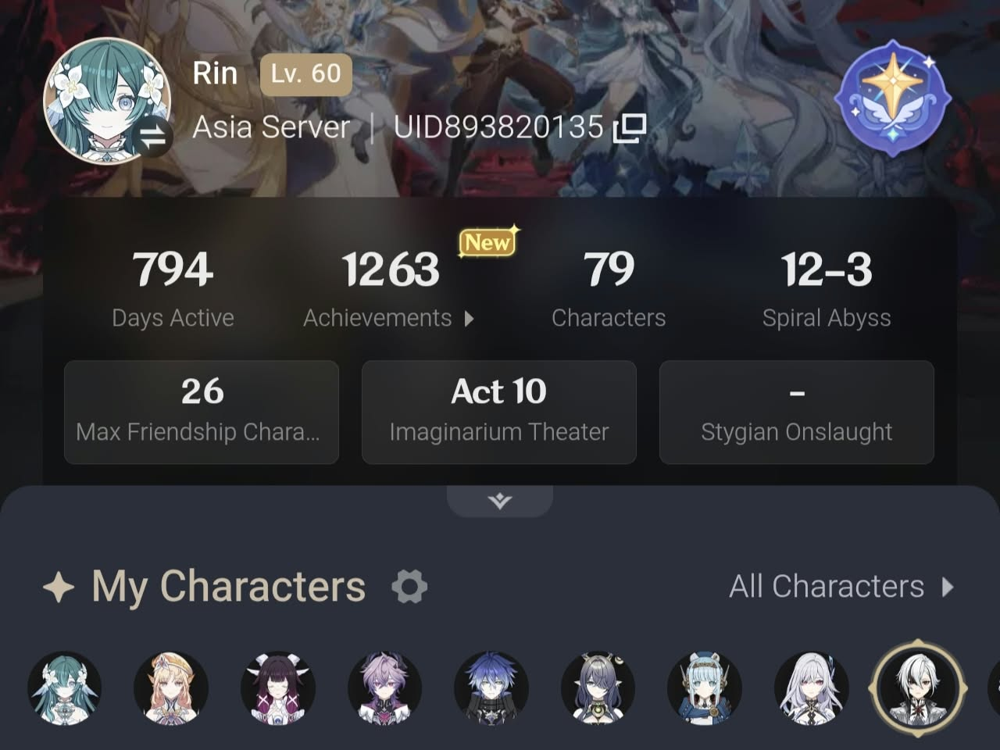
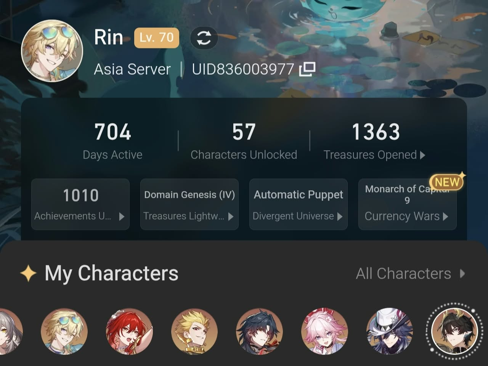
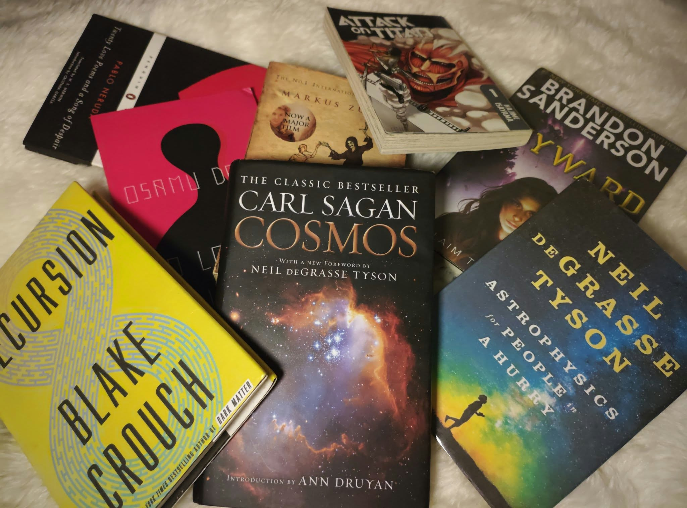

The Good, the Bad, and the Potential of AI-based Systems in Computing Education
IEEE COMPSAC 2025
A systematic review exploring the benefits, challenges, and potential future directions of AI-based systems in computing education.
Hello, I'm Mirza Tairin.
I am an MSc student in Computer Science at BRAC University and a software developer with a background in database and enterprise application development.
My research interests lie at the intersection of Artificial Intelligence, Human-Computer Interaction, Explainable AI, and Responsible AI.
I am particularly interested in understanding how intelligent systems reason, how people interact with them, and how we can build AI systems that are more interpretable, reliable, and centered around human needs.
Outside of computing, I enjoy singing, digital art, photography, literature, manga, and video games.
BRAC University
Graduate study in computer science with a developing focus on artificial intelligence, human-centered computing, explainability, and responsible AI.
Ahsanullah University of Science and Technology
Undergraduate study in computer science and engineering, with a foundation in software development, databases, algorithms, and computer systems.
Global Spirit Engineering Trade & Services Ltd.
Developed enterprise software and ERP modules using ASP.NET Core and SQL Server, including REST APIs, data-processing workflows, and database optimization.
East Bengal Transport Service
Worked on database development, data management, and software systems supporting organizational operations.
Panjeree Publications
Worked with information systems, database-driven applications, and organizational data workflows.
My research and project work explore the intersection of artificial intelligence, human-centered computing, scientific visualization, and cultural heritage.
GHC Academic Poster Sessions, Grace Hopper Celebration 2026, AWS-sponsored; October 2026
View Project on GitHub →Shortlisted Top Entry, IEEE SciVis Contest 2026; invited for in-person presentation and poster at IEEE VIS 2026
View Project on GitHub →Invited CFP, University College Cork; Ongoing
View Project on GitHub →IEEE COMPSAC 2025
A systematic review exploring the benefits, challenges, and potential future directions of AI-based systems in computing education.
My academic, research, and professional background.
Download CVBeyond computing, I enjoy creating, listening, photographing, reading, and exploring stories, worlds, and places.
Music has always been one of my favorite ways of creating and expressing myself.
Visit my YouTube channel →A collection of my digital artwork and creative experiments is soon to be uploaded!~
Beyond music, digital art, and computer science, I am also an avid fan of video games, particularly titles such as Genshin Impact, Honkai: Star Rail, and Infinity Nikki.
Beyond playing, I particularly enjoy exploring the lore and worldbuilding of these games, and occasionally create lore-focused content for the titles I enjoy.


They say that books are the window to a person's soul, I agree. I have always been drawn to stories, ideas, and worlds that invite curiosity beyond their immediate medium. My interests range from science and popular nonfiction to literature, manga, and anime~
Some works that have particularly stayed with me include Cosmos by Carl Sagan, Attack on Titan by Hajime Isayama, and Dark Matter by Blake Crouch. "But Rin, haven't you read these books over 500 times alrrady?" Yes, precisely. And I'll gladly read them again!~

Photography is one of the ways I enjoy observing and preserving the places, people, and everyday moments around me.
Outside of my academic and creative pursuits, I enjoy gardening and travelling. These quieter activities give me opportunities to slow down, observe my surroundings, and discover new places and perspectives.